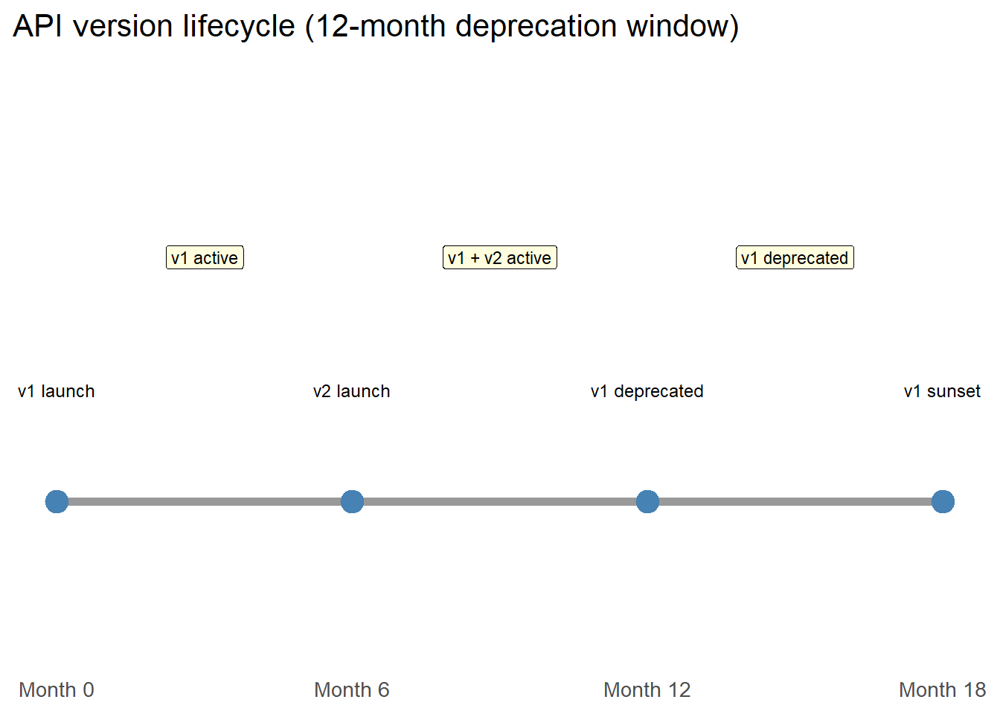

library(ggplot2)
phases <- data.frame(
phase = c("v1 launch", "v2 launch", "v1 deprecated", "v1 sunset"),
month = c(0, 6, 12, 18),
y = c(1, 1, 1, 1),
label_y = c(1.15, 1.15, 1.15, 1.15)
)
phases2 <- data.frame(
label = c("v1 active", "v1 + v2 active", "v1 deprecated"),
x = c(3, 9, 15),
y = c(1.35, 1.35, 1.35)
)
ggplot() +
geom_segment(aes(x = 0, xend = 18, y = 1, yend = 1),
colour = "grey60", linewidth = 2) +
geom_point(data = phases, aes(x = month, y = y),
size = 5, colour = "steelblue") +
geom_text(data = phases, aes(x = month, y = label_y, label = phase),
size = 3.2, vjust = 0) +
geom_label(data = phases2, aes(x = x, y = y, label = label),
size = 3, fill = "lightyellow", label.size = 0.3) +
scale_x_continuous(breaks = c(0, 6, 12, 18),
labels = paste("Month", c(0, 6, 12, 18))) +
ylim(0.8, 1.6) +
labs(x = NULL, y = NULL,
title = "API version lifecycle (12-month deprecation window)") +
theme_minimal(base_size = 13) +
theme(axis.text.y = element_blank(),
axis.ticks.y = element_blank(),
panel.grid = element_blank())